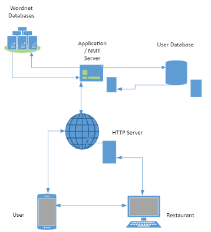
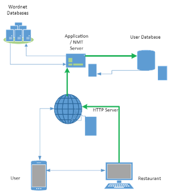
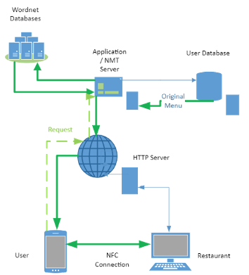
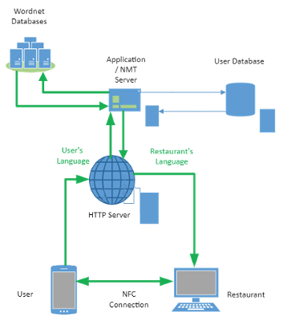

Project —
Overview
UMI is a web-based natural language translation application developed for patrons and businesses specific to the hospitality industry. With accessibility to mainstream consumer experiences at its core, UMI advocates for a shift in cultural relatability through the experience of food and dining and improving the interaction between non-native speaking customers and establishments. Cognisant of the barriers to intercultural communications between diners and service staff in restaurants, UMI utilises NFC technology to streamline the translation process and eliminates the need for cumbersome verbal interpretations.
Motivation
A globe forced to plant their roots, granted an abundance of time and a deep rooted longing to travel; UMI’s project idea aims to create and connect the ties between humans once severed to once again experience familiar and unfamiliar scenes alike. We all have our own reasons to travel to foreign land and as humans we all experience the same need - to eat! However, negotiating language-barriers can be a nerve-wracking and anxiety inducing ordeal most would rather avoid. To overcome such emotions, some existing tactics are to memorise basic foreign language phrases, mimic translation apps, or perhaps avoid the interaction all together and navigate independently of your environment, all of which spoils the beauty of creating lasting memories in a land outside of your own backyard. As such, UMI’s text-based natural language translation application aims to create and connect ties through opening opportunities to experience a country’s cuisine our patrons would previously avoid due to the language barrier.
Description
The Restaurant
When the end-user is a hospitality business, the user will access UMI's HTML dashboard via the world wide web. First, the web page will present the user with a login screen, prompting them to sign in to an existing account or create a new one. Once the user has completed the login process, the web page will display a unique landing page specific to the restaurant. From here, users can upload menu images and descriptions, view previous orders, manage billing details, and more. Upon uploading a menu item, the HTTP server will transfer it to the application server, which then converts the information to SQL format and stores the file on the client database (fig. 2).
The Customer
When the end-user is a customer, the UMI application is downloaded directly to their device from the App Store. Subsequently, the user will reach the App's landing page and be prompted to log in or create a new account, requiring an internet connection to the UMI web server. Once logged in, the user can view their account details, such as the user's name, address, billing information and the primary language spoken. The user server provides this information which the application server then retrieves—finally, the HTTP server processing the information through the world wide web (Fig. 3)
When a customer visits a restaurant, they can use UMI to obtain a copy of the menu in their preferred language. They achieve this by opening the application on their NFC-enabled device and tapping their phone at the corresponding NFC device on the restaurant's counter. This action will initiate a request through the web server to the application server that tells the application to retrieve the restaurant menu.

Once the information is retrieved, the application server will transfer the data to the Neuro Machine Translation (NMT) server. The NMT server will subsequently apply UMI's NMT algorithm to translate the text using the WordNet database. Upon completion, the HTTP server will return the translated text to the user (Fig. 4)
Ordering
When the user is ready to order, they can select the desired menu items from within the App on their device. They can also add variations and comments to their order in their preferred language. Once they have completed the order within the App, the user will tap their device onto the corresponding NFC device. This action will send the order back to the HTTP server, then to the application server, finally arriving at the NMT server for translation. The NMT server will use UMI's algorithm to the words from the target language WordNet and return the translated text to the restaurant to finalise the order (Fig. 5)
Client / Front End
When a user starts using our App, their first interaction will be with the front end. This interaction will be either through a web page or through an application on their device. The front-end acts as a graphical user interface (GUI). The user can send and receive information through the GUI from the application back end.
The GUI is relatively simple in design, with a simple landing page prompting the user to log in or create an account with our service. The App will then present a personal landing screen to the user. From here, the user can view their account information in their preferred language. Once the customer requests a menu, a translated version of the menu will be made available. The user can complete this process automatically through the App, with the preferred method being a data transfer via NFC. Once the device has tapped the NFC hotspot, it will establish a connection to the App’s web server. UMI will then present the user with the option to download the menu in the language of their choice.
UMI's website and mobile application will be designed and developed in tandem to ensure an intuitive and user-friendly front-end experience. This objective will utilise X Code's programming suite for iPhone development (Ching 2019) and Android Studio's service for the Android version (TheZachBales n.d.). UMI will develop the App's web pages using a combination of HTML, CSS, and Javascript (Cox 2020).
Near Field Communication
Near Field Communication (NFC) devices allow the peer-to-peer transfer of secure information between two users that are within close proximity of one another (Sauter 2016). UMI's primary objectives are to facilitate user-to-user communications and user-to-infrastructure translations between hospitality businesses and potential customers. The App enables this process using NFC technology, allowing the user to make quick translations to and from nearby devices or NFC tags.
As the establishment would typically already use PC or laptops within their business operations, the restaurant would need to purchase an NFC reader for around $60 (Square Reader n.d.). This reader will require encoding using GoToTag's encoder for around 25c per tag (GoTo n.d.).
Web Server
UMI requires an internet connection to send and receive data from the user to the App's back end. As such, a Hypertext transfer protocol (HTTP) connection over the world wide web is necessary for the App to connect to its cloud-based web server (Schuler 2002). Once the App has established the connection, the user can request database information. The web server will allow the application to communicate to the client.
Here the static parts of the application can be accessed, such as HTML pages, media, and client information to be uploaded through the internet. Additionally, the web server is responsible for taking the language-translation information from the application server and converting it to the HTML language to use the information.
Application and NMT Server
The application server is the real brains of the operation. It is here that the user makes all requests for information that are subsequently processed. For example, suppose a client wishes to add a document to the database. The application server would receive the request from the user and add the relevant metadata to ensure that the server stores the document. This process enables the document to be accessed by the user in the future (IT Pro Team 2018).
The application server is responsible for the translation services provided by UMI, so too retrieving the text from uploaded documents and preparing it for translation via the NMT server. Once the application has received the translated text, the App can create a new record to be sent to the database or the client via the web server.
Machine translation pertains to the ability of a computer to translate from one language to another (Brownlee 2017). Neural Machine Translation (NMT) uses neural network algorithms to learn a statistical model for this translation (Brownlee). These algorithms allow users to make end-to-end translations from output to input for entire sentences (Brownlee 2017). The NMT server can use this algorithm as the basis of its translation service. In other words, using the WordNet database in the correct language, the server will be able to accept text that is input by the user. Subsequently, the server will be able to output translated text back into the application server.
Client and Wordnet Databases
For an App of this nature to function sufficiently, the Company will need to store large quantities of data and its servers sophisticated enough to retrieve it. UMI's mobile application will employ two varieties of databases; the first will manage the data collected from users while the second will address the language translation process.
The former will collect information such as usernames, email addresses, personal details, and documents using My SQL's database writing tool (Coe 2021). UMI's primary considerations concerning data storage and retrieval revolve around security and scalability (Intersog 2017).
The second variety will utilise Wordnet's databases which store words and definitions for each recorded word in any given language. Top universities worldwide typically maintain these databases - for example, Princeton University governs the English language Wordnet database (Devopedia 2020). Wordnet will enable the App to translate pieces of text or documents from one language to another (Devopedia 2020).
Tools and Technology
Front End
UMI's front end requires coding ability for the application to be presented as a stand-alone app on phones, and as web content for end-users accessing via a computer. To create a well-designed interface with UX best practices in mind, UMI needs a team of experienced front-end developers with aptitude programming in Swift (Ching 2021) for the iPhone version, Javas and Android studios for the Android app (TheZachBales n.d), as well as HTML, CSS, and Javascript for web page development (Cox 2020). Proficiency with these languages is sufficient to program all of our front-end products.
UMI's front-end developers will program the Near field Communication (NFC) feature essential to the mobile app using Swift and/or Java languages (Cherednichenko 2020). GoToTags commercial software and hardware will be used to encode the tags necessary for the business to transfer information to the customer's device (Go to n.d.).
Servers
The most scalable and cost-effective way of procuring servers for UMI's application is to subscribe to a cloud-based service and effectively rent the space required. Apache's web server is one of the most time-honoured and recognised HTTP server products on the market (AWS 2021a). Apache's offering will allow UMI to expand its service as the Company gains traction in the marketplace.
Neural Machine Translation (NMT) is crucial to UMI's service in order to automate language translation and therefore requires an NMT server, with Amazon CloudFront being the most suitable supplier for the business model, preferenced for its low latency and high data transfer rates (AWS 2021b). In addition to hosting, the NMT server enables fast access to the customer database. UMI's application server will require an application programming interface (API) between the HTTP server and the NMT server.
A team of developers that are skilled in programming these servers is required to ensure the end-user will have an intuitive, seamless experience. Additionally, mathematicians are needed to optimise the NMT algorithm, ensuring an adequate translation service is provided. Conversely, personnel could use Amazon Web Service's IaaS solution for neural machine translations (AWS 2021, c).
Databases
UMI's user database will use Structured Query Language (SQL) and will be established using MySQL's IaaS (Oracle 2021), requiring developers with aptitude in SQL language.
Princeton's WordNet will be utilised as UMI's lexical database for English and hence, would not be owned or operated by the Company, nor the end-user. The application server would depend upon an API to pull the data from WordNet's servers in order to adequately translate pieces of text at the user level.
Skills
As UMI is a high-end project, the business requires highly skilled individuals in its arsenal. The below personnel will be instrumental in ensuring a robust end product is delivered. Some of these will require more than one person in a role, and conversely, one person may be able to contribute to multiple areas.
Graphic Designer
An experienced graphic designer with UX & UI experience is required to ensure user-facing apps and web design is current, sleek, intuitive, and professional. UMI exists in a competitive market and without a physical product, meaning the design and branding are of paramount importance. UMI will lean heavily on the design team to ensure the Brand's mission, ethos, tone, and objectives communicated across all marketing collateral and digital assets whilst maintaining UX best practices throughout all interfaces and dashboards (Malvick 2020).
Front End Developer
An expert Front End Developer is needed to create functional user-facing content for UMI's mobile applications and restaurant-facing website. Working closely with the design team, the Front End Developer will bring functionality to UMI's interfaces, ensuring an intuitive and user-friendly experience. They will be proficient in CSS, HTML, Xcode, and JavaScript languages and demonstrate a comprehensive understanding of API, Python, and version control protocols (Gallagher 2020).
Back End Developer
An exceptionally skilled Back End Developer is essential to ensuring that the UMI Application functions as intended and that all systems communicate adequately using application programming interfaces (Gibbs 2019). The Back End Developer will program the user database, the application server, the web server and the neural machine translation and, as such, will require aptitude in several programming languages. They will require knowledge of Database programming languages such as MySQL, MongoDB, SQLServer (guru 99, n.d.). For programming and customizing APIs they will require a good understanding of REST and SOAP languages (guru 99, n.d.). For setting up the servers they would also need to program in Apache, or some other server language(guru 99, n.d.)
Project Manager
UMI requires an experienced Project Manager with exceptional leadership and communication skills, analysis expertise, and a firm grasp of budgeting, planning, and management best practices to see the Project through from ideation to completion. Responsible for managing deadlines, human resources, risk management and stakeholder communication (Landau 2019). The successful candidate will preferably hold a relevant Bachelor's degree or adequate experience in the field.
Marketing Manager
An expert Marketing Manager is essential for UMI to generate enough revenue to cover the development costs and turn a profit. To achieve hyper-growth and to reach its target audience, a multi-faceted approach to marketing endeavours is pertinent. The Marketing Manager must demonstrate comprehensive proficiency with digital marketing strategy, Google Ads and analytics, Facebook Ads, PR, marketing research, consumer trends, brand positioning, and SEO/SEM best practices (Farkash 2020). Proficiency with Google Search Console, Analytics and Tag Manager, and Facebook Business Manager.
Finance and Accounting Manager
The project will need to be financed by investors with start-up capital. The finance manager (FM) is responsible for finding start up capital funds so that the app can be started. The FM is then responsible to ensure that each part of the project is running to budget. The FM works closely with the project manager to ensure that the budget is on schedule, and is also responsible for producing financial records for all relevant stakeholders.
Additional Personal
- Finance & Accounting Manager to oversee investor relations and manage company funds.
- National Sales Director to formulate UMI's sales strategies and lead the nationwide sales team.
- Brand Manager to monitor consumer demands and ensure consistency across companywide communications and marketing.
- IT Security Officer to manage security protocols and liaise with consultants and analysts external to the business.
Outcomes
Uptake of the application will primarily provide a stronger connection to hospitality businesses and their local and existing multinational customer-base through providing a culturally sensitive translation behind the products a business can offer, and the means by which they are offered. By providing this service, restaurant businesses will be better able to reach larger customer-bases and demographics, such as tourists and migrants, by providing appropriate language services as a means of increasing accessibility to foods and their cultural contexts to new and potentially multinational customers. Additionally, providing language services adheres and promotes a person’s access to linguistic rights and their ability to understand and communicate the nature of a particular service across language barriers (Universal Declaration of Linguistic Rights, 1998). By breaking down language barriers to communication, restaurants and hospitality businesses are better able to offer services in a personalised, accessible, and educational manner, while customers gain a better cultural and language understanding of cuisine and product through exchanging information communicated in their chosen language, and thus strengthening the business-to-customer relationship.
For a business utilising UMI services, providing language translation pertaining to a menu description, product alterations and dietary considerations, and payment options increases customer engagement and generally leads to a positive restaurant experience. Research shows language barriers as the main source of stress for customers, highlighting an inability to effectively express themselves, and difficulties understanding servers and menu items (Kim & Mattila, 2011). Additionally, some demographics are uncertain with food customisation practices and service styles, observing distinct cultural differences a business has failed to cater for, or is unaware of – such as “power distance” (the dynamic between individuals observed in Asian cultures) (Kim & Mattila, 2011) (Farh, Hackett & Liang, 2007).
Providing translation services to customers also protects access to their linguistic rights, allowing a customer to communicate their needs and be serviced in their chosen language in a public setting. (Article 3, Universal Declaration of Linguistic Rights, 1998)
By re-opting this interaction into menu-translation and built-in ordering functionality, the application alleviates this stress of communicating across languages without compromising the restaurant experience, thus, creating a channel for business and customer to communicate directly, appealing to a wider customer-base, and improving customer-retention (Lew & Hall-Lew, 2014).
For the customer, UMI services personalises the dining experience on behalf of the restaurant by delivering essential information about product and service in their own chosen language. Customers can avoid embarrassment and anxiety derived from negotiating language barriers (Kim & Mattila, 2011) by having the service provided in their own language through a digitised and translated menu. Built-in ordering functionality also allows a customer to take their time understanding menu items and greater satisfaction from their menu choices. (Zhou, 2020). Providing a deeper context behind menu items and cultural significance mitigates instances of discrimination and improvements cross-cultural relatability (Kim & Mattila, 2011) (Lew & Hall-Lew, 2014). Continued use of the application will eventually expand a customer’s cultural understanding and sensitivity to products and practices, while additionally streamlining the communicative process between business and customer.
Translation services provided through the application would also be beneficial to food-safety and compliance officers who may experience difficulty understanding restaurant offerings and processes due to language barriers (Freeborn, 2018) (Neal, Dawson & Madera, 2011). Providing a contextualised translation of ingredients, product lists and business practices can smoothen an auditor’s process for data collection, whilst improving communications generally between businesses and their regulation requirements.
Another important aspect of hospitality industry is the influence of food bloggers and “foodie culture”. Many small restaurant businesses rely on food bloggers and content creators to provide exposure of products to audiences through social media (Ulver, 2019). Providing a deeper cultural context behind the products showcased can potentially open avenues for food bloggers to expand their scope to more dynamic and informative content, exposing businesses to larger audiences and potential customers.
Overall, the application aims to provide communities an opportunity for greater cultural-sensitivity and awareness through the context of food and dining in an increasingly globalised society. By focussing on food and cuisine as our mode of communicating a cultural experience, we are able to expose app users and restaurateurs to a wider appreciation for the multicultural demographics existing in their local and international communities.